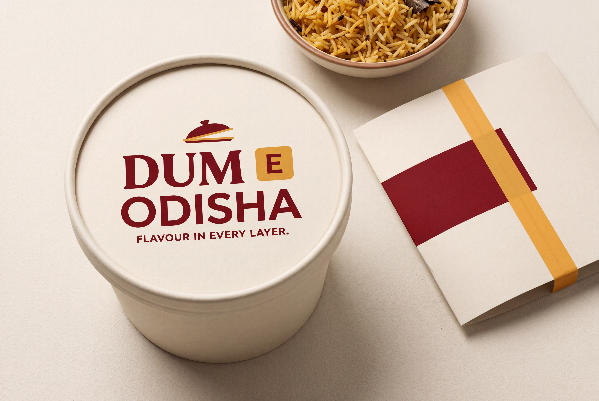
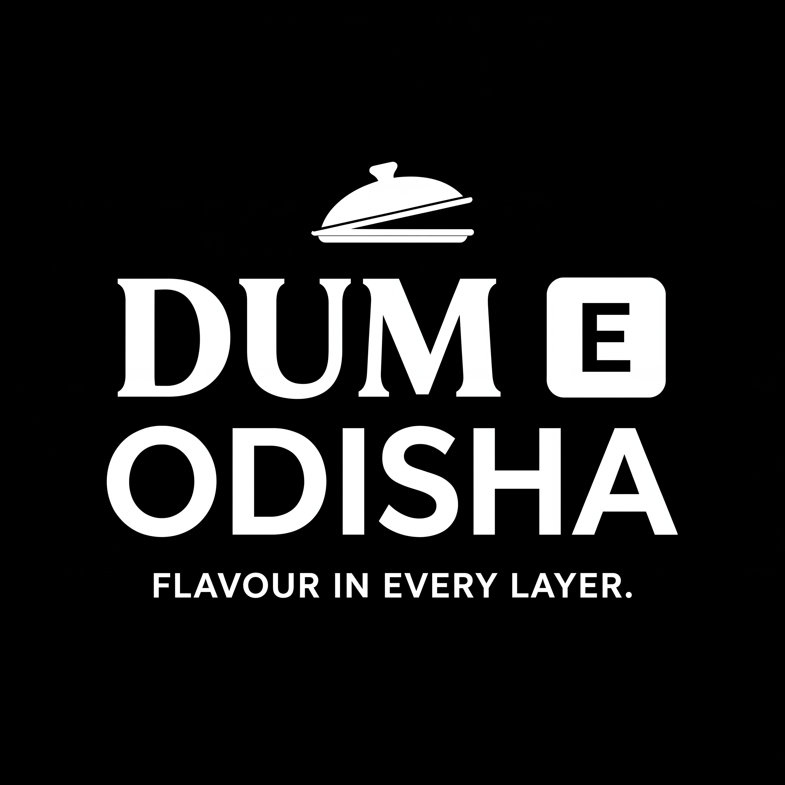

#8B3029Primary lettering, lid and packaging band
Flavour in Every Layer.
A clearer name. Warm, restrained colour. A consistent identity for the bag, the biryani tub and every shared meal.
DUM uses substantial serif capitals. E has its own saffron block and a clear gap from the M. ODISHA is large enough to read as part of the brand.
The lifting lid sits independently above the name. It recalls the warmth of opening a meal without joining the letters into “dume”.
Chilli provides depth; saffron gives the E a recognisable role. The separation remains visible in the reverse proof.
Download final logoThe same name and colour hierarchy appear across the carrier, tub and seal. A quiet rice-grain pattern supports the packaging, leaving the logo easy to find.


#8B3029Primary lettering, lid and packaging band
#E6AB44Separate E block, lid rim and limited packaging accents
#FFF9EFMain field and packaging substrate target
#29231FFunctional copy outside the logo
HEX values are design targets. The generated artwork has slight tonal variation; exact print inks require production artwork and a physical proof.
Always write Dum E Odisha in copy. Keep the space around E. Biryani describes the offer; place it in menu or product copy outside the official logo.
The logo combines generated serif lettering with clean sans-serif capitals. Use a quiet sans-serif for menu descriptions, prices and ordering information. Keep the supplied logo as artwork; retyping it will change its proportions.
Warm, direct and appetite-led. “Find your favourite. Share a biryani.” Lead with the dish and flavour; make recipe, sourcing or heritage claims only when the business can support them.

The white reverse proof preserves the word gap and gives E a dark knockout inside its own block. Colour reinforces recognition; the structure carries it.
Supplied as a JPEG on an opaque black background. A transparent reverse master and true single-ink separations belong to the production artwork stage.
Download reverse proofSeven primary studio case studies informed the decisions: clearer name structure, expressive logo lettering paired with practical information type, and a consistent packaging system. The result is our synthesis for this brand.
Read the research and design decisions →
Download final packageBrowse all earlier designs →Package: colour logo, reverse proof, two packaging mockups, identity record and research notes. Visual artwork generated only through Nano Banana. High-resolution raster deliverables; editable vectors, transparent backgrounds and print dielines are not included.